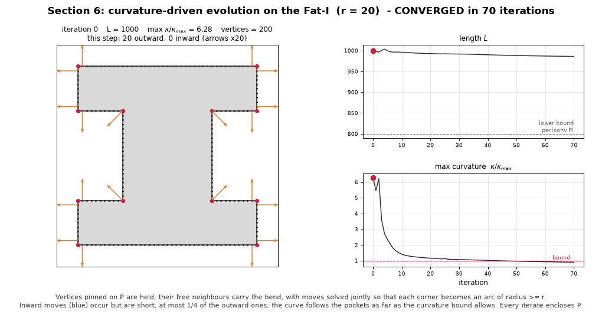
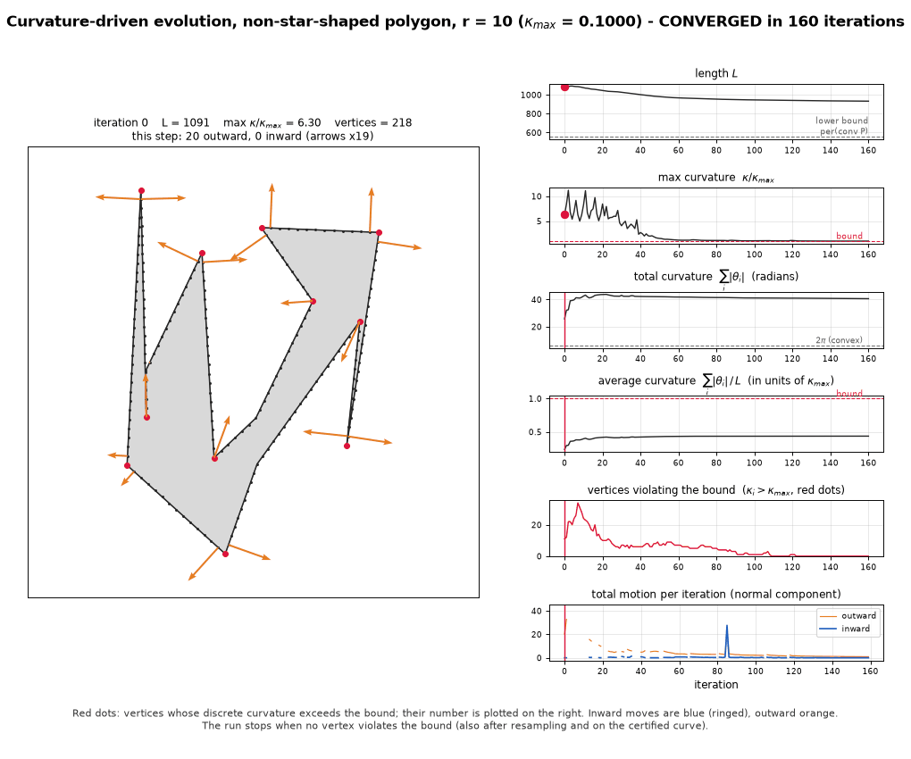

Curvature-Bounded Enclosures of Simple Polygons
Abstract
Vehicles and tools that travel around a polygonal region at constant speed follow paths of bounded curvature, yet should stay close to the region. We study enclosing a simple polygon from the outside by a closed curve of bounded curvature that is close to the polygon, either in its largest distance (min-max) or in its distance integrated along the curve (min-sum). To stay close, the curve must follow the pockets of the polygon. We present a curvature-driven evolution: a proximity-seeking heuristic that moves vertices both outward and inward, treats the polygon as an obstacle, keeps every iterate simple and enclosing, and returns a certified curve of segments and arcs. Experiments on hand-designed shapes and random polygons show that the curve follows the pockets while respecting the curvature bound: its largest distance to the polygon is smaller than that of the shortest enclosure on 338 of 372 non-convex instances, and smaller than that of the other baselines on nearly all. To the best of our knowledge, this is the first work to address the problem of enclosing a non-convex polygon closely by a curve of bounded curvature.
Simulations


Interactive app
Draw a simple polygon on the canvas (or pick a preset, or type coordinates), choose the curvature bound and the parameters, and watch the evolution live, then as an animated replay. The app runs on Streamlit Community Cloud; if it has been idle it may take about 30 seconds to wake up.
Paper
The short version is the conference-length paper; the extended version adds the full analysis and additional experiments.
If the PDF does not show above, download the short version or the extended version.